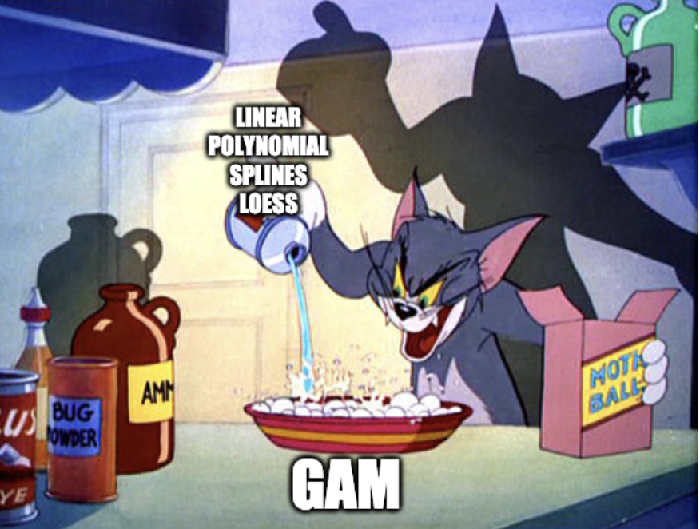
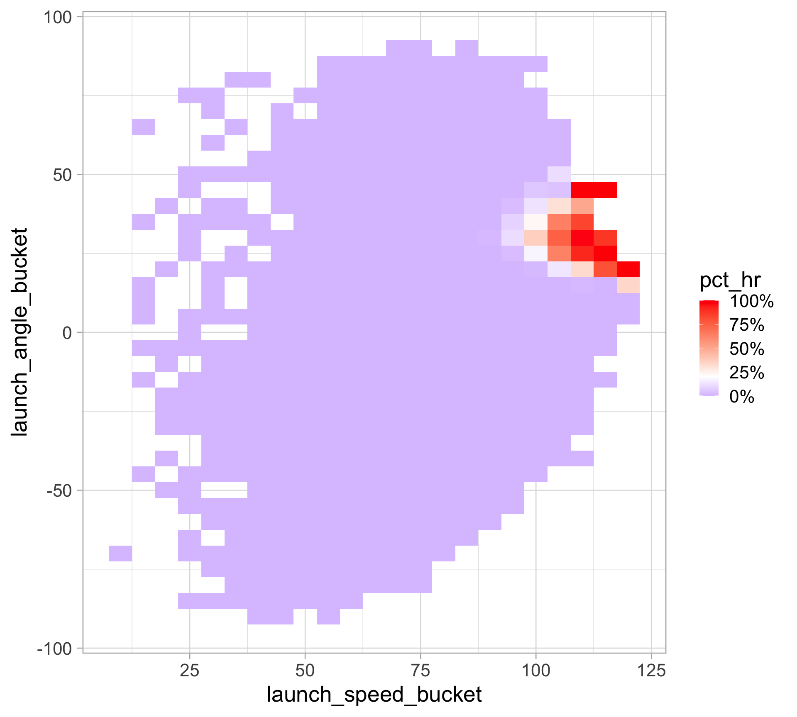
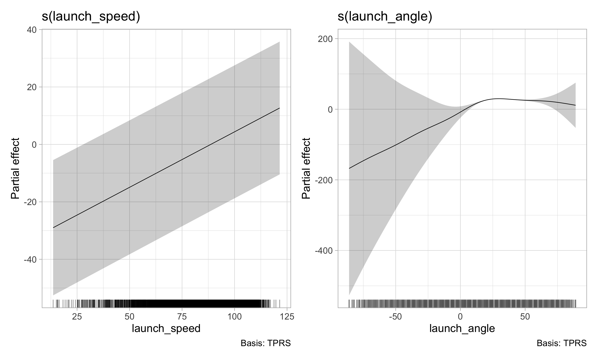
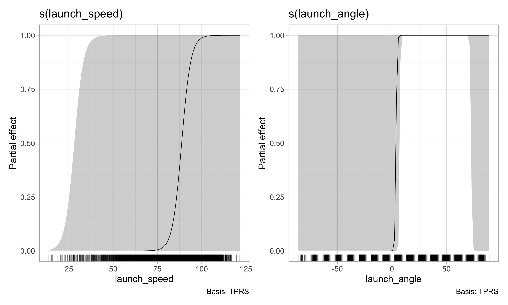
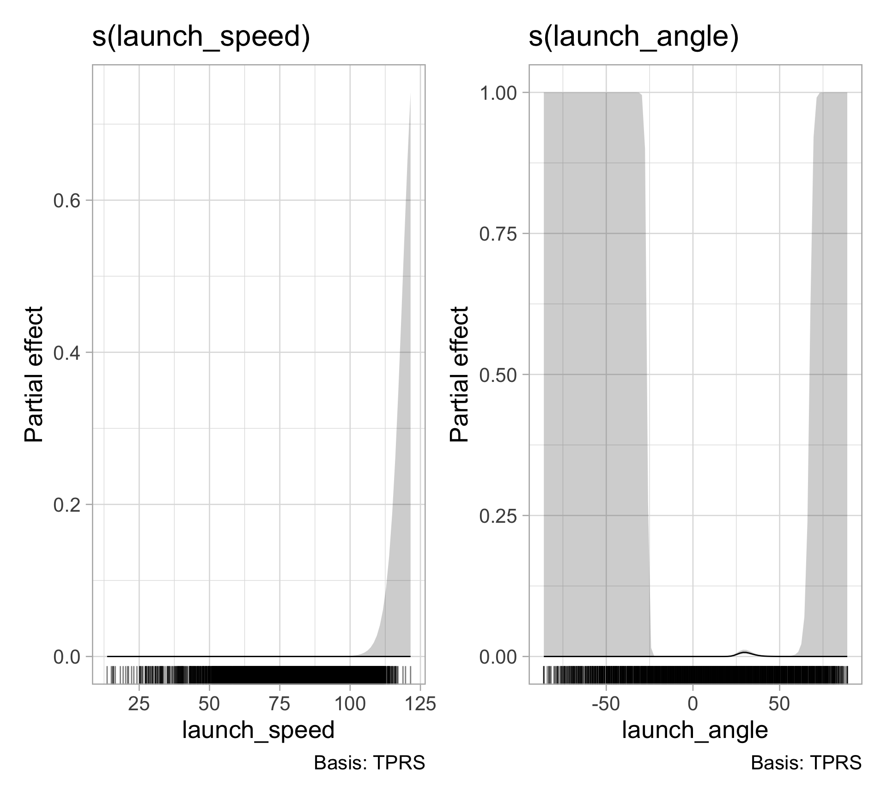
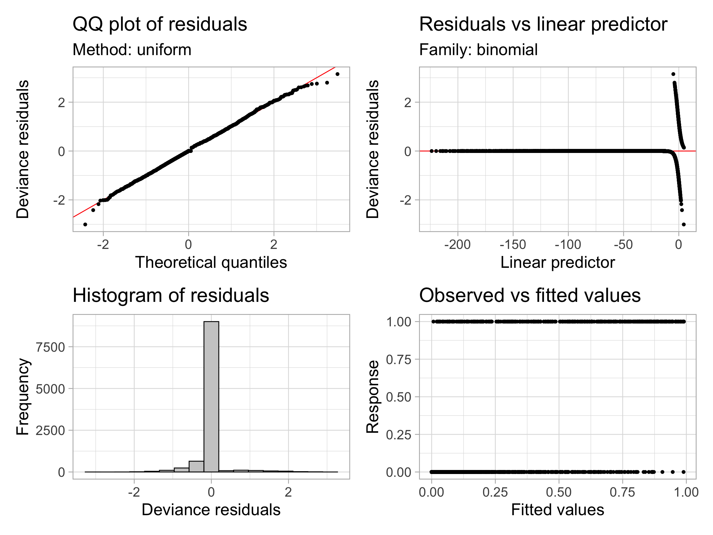
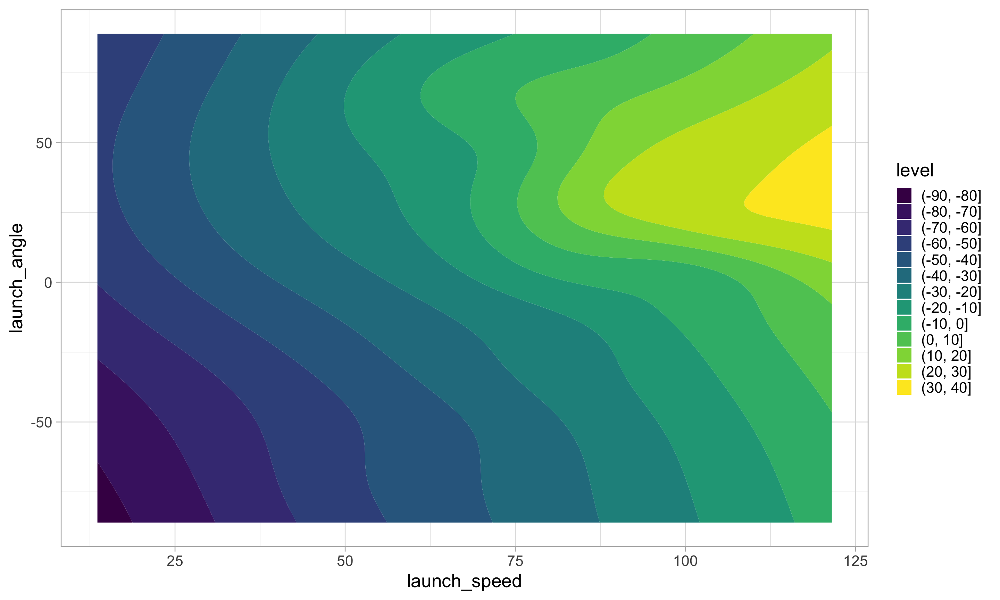
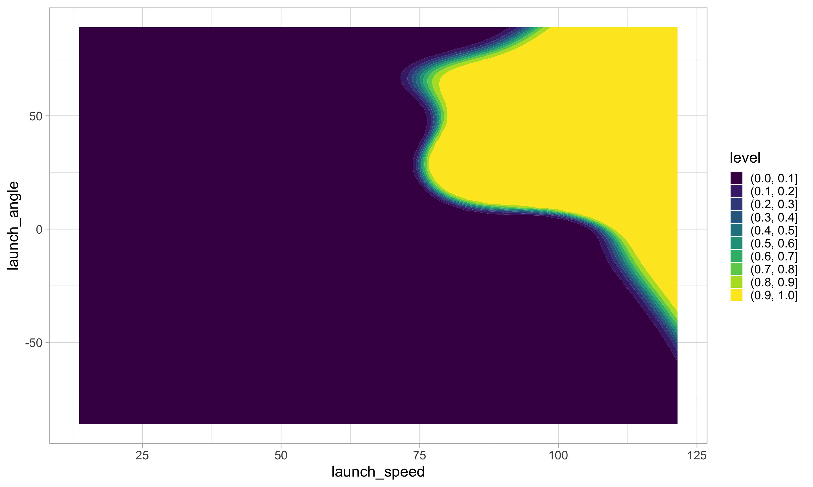

Supervised learning: nonparametric regression
SURE 2024
Department of Statistics & Data Science
Carnegie Mellon University
Background
Model flexibility vs interpretability
From ISLR

Model flexibility vs interpretability
Tradeoff between model’s flexibility (i.e. how wiggly/curvy it is) and its interpretability
The simpler, parametric form of the model, the the easier it is to interpret
Parametric models, for which we can write down a mathematical expression for \(f(X)\) before observing the data, a priori (e.g. linear regression), are inherently less flexible
Nonparametric models, in which \(f(X)\) is estimated from the data, are more flexible, but harder to interpret
\(k\)-nearest neighbors (\(k\)-NN)
Find the \(k\) data points closest to an observation \(x\), use these to make predictions
- Need to use some measure of distance, e.g., Euclidean distance
Take the average value of the response over the \(k\) nearest neighbors
\(k\)-NN classification: most common class among the \(k\) nearest neighbors (“majority vote”)
\(k\)-NN regression: average of the values of \(k\) nearest neighbors
- The number of neighbors \(k\) is a tuning parameter (like \(\lambda\) is for ridge/lasso)
Finding the optimal number of neighbors \(k\)
Recall: bias-variance tradeoff
- If \(k\) is too small, the resulting model is too flexible: low bias, high variance
- If \(k\) is too large, the resulting model is not flexible enough: high bias, low variance
Moving beyond linearity
- The truth is (almost) never linear
- But often the linearity assumption is good enough
What if it’s not linear?
splines
local regression
generalized additive models
- The above methods can offer a lot of flexibility, without losing the ease and interpretability of linear models
Generalized additive models (GAMs)
- Previously: generalized linear models (GLMs) (e.g., linear regression, logistic regression, Poisson regression)
- GLM generalizes linear regression to permit non-normal distributions and link functions of the mean \[g(E(Y)) = \beta_0 + \beta_1 x_1 + \beta_2 x_2 + \dots + \beta_p x_p\]
What if we replace the linear predictor by additive smooth functions of the explanatory variables?
Entering generalized additive models (GAMs)
relax the restriction that the relationship must be a simple weighted sum
instead assume that the response can be modeled by a sum of arbitrary functions of each predictor
Generalized additive models (GAMs)
Allows for flexible nonlinearities in several variables
But retains the additive structure of linear models
\[g(E(Y)) = \beta_0 + s_1(x_1) + s_2(x_2) + \dots + s_p(x_p)\]
Like GLMs, a GAM specifies a link function \(g()\) and a probability distribution for the response \(Y\)
\(s_j\) is some smooth function of predictor \(j\)
GLM is the special case of GAM in which each \(s_j\) is a linear function
Generalized additive models (GAMs)
- Relationships between individual predictors and the response are smooth
- Estimate the smooth relationships simultaneously to predict the response by adding them up

- GAMs have the advantage over GLMs of greater flexibility
A disadvantage of GAMs and other smoothing methods, compared with GLMs, is the loss of simple interpretability
How do we interpret the effect of a predictor on the response?
How do we obtain confidence intervals for those effects?
Generalized additive models (GAMs)

Splines
A common way to smooth and learn nonlinear functions is to use splines
A spline is a piecewise polynomial having continuous derivatives of all orders lower than the degree of the polynomial
There are knots (boundary points for functions) placed at every point
Splines are functions that are constructed from simpler basis functions
Splines can be used to approximate other, more complex functions
Splines
- A \(d^{\text{th}}\)-order spline is a piecewise polynomial function of degree \(d\) that is continuous and has continuous derivatives of orders \(1, \dots, d − 1\) at its knot points
- This requires us to choose the knots (fixed points between which the function is polynomial)
- We can eliminate the need to choose knots by using a smoothing spline
Smoothing splines
Use smooth function \(s(x)\) to predict \(y\), control smoothness directly by minimizing the spline objective function
\[\sum_{i=1}^n (y_i - s(x_i))^2 + \lambda \int s''(x)^2dx\]
\[= \text{fit data} + \text{impose smoothness}\]
\[\longrightarrow \text{model fit} = \text{likelihood} - \lambda \cdot \text{wiggliness}\]
Smoothing splines
The most commonly considered case: cubic smoothing splines
\[\text{minimize }\sum_{i=1}^n (y_i - s(x_i))^2 + \lambda \int s''(x)^2dx\]
First term: RSS, tries to make \(s(x)\) fit the data at each \(x_i\)
Second term: roughness penalty, controls how wiggly \(s(x)\) is via tuning parameter \(\lambda \ge 0\)
- Balances the accuracy of the fit and the flexibility of the function
- The smaller \(\lambda\), the more wiggly the function
- As \(\lambda \rightarrow \infty\), \(s(x)\) becomes linear
Smoothing splines
Goal: Estimate the smoothing spline \(\hat{s}(x)\) that balances the tradeoff between the model fit and wiggliness
Remember: Goldilocks principle

Examples
Predicting MLB HR probability
Data available via the
pybaseballlibrary inpythonStatcast data include pitch-level information, pulled from baseballsavant.com
Example data collected for the entire month of May 2024
library(tidyverse)
savant <- read_csv("https://raw.githubusercontent.com/36-SURE/36-SURE.github.io/main/data/savant.csv")
batted_balls <- savant |>
filter(type == "X") |>
mutate(is_hr = as.numeric(events == "home_run")) |>
filter(!is.na(launch_angle), !is.na(launch_speed), !is.na(is_hr))
# head(batted_balls)Predicting HRs with launch angle and exit velocity
HRs are relatively rare and confined to one area of this plot
Predicting HRs with launch angle and exit velocity
There is a sweet spot of launch_angle (mid-way ish) and launch_speed (relatively high) where almost all HRs occur
batted_balls |>
group_by(
launch_angle_bucket = round(launch_angle * 2, -1) / 2,
launch_speed_bucket = round(launch_speed * 2, -1) / 2
) |>
summarize(hr = sum(is_hr == 1),
n = n()) |>
ungroup() |>
mutate(pct_hr = hr / n) |>
ggplot(aes(x = launch_speed_bucket,
y = launch_angle_bucket,
fill = pct_hr)) +
geom_tile() +
scale_fill_gradient2(labels = scales::percent_format(),
low = "blue",
high = "red",
midpoint = 0.2)
Fitting GAMs with mgcv
- Set up training data
- Modeling the log-odds of a home run using non-linear functions of
launch_speedandlaunch_angle\[ \log \left( \frac{p_{\texttt{is_hr}}}{1 - p_\texttt{is_hr}} \right) = \beta_0 + s_1 (\texttt{launch_speed}) + s_2 (\texttt{launch_angle})\] where \(p_\texttt{is_hr}\) is the probability of a home run
View model summary
mgcvperforms hypothesis tests for the smooth terms — these are roughly the equivalent of an \(F\)-test for dropping each termEffective degrees of freedom (edf): basically the number of free parameters required to represent the function
In a smoothing spline, different choices of \(\lambda\) correspond to different values of the edf, representing different amounts of smoothness
# A tibble: 2 × 5
term edf ref.df statistic p.value
<chr> <dbl> <dbl> <dbl> <dbl>
1 s(launch_speed) 1.00 1.00 388. 0
2 s(launch_angle) 3.92 4.24 251. 0# A tibble: 1 × 5
term estimate std.error statistic p.value
<chr> <dbl> <dbl> <dbl> <dbl>
1 (Intercept) -34.8 11.8 -2.94 0.00329Visualize partial response functions
Display the partial effect of each term in the model \(\longrightarrow\) add up to the overall prediction
Convert to probability scale
Centered on average value of 0.5 because it’s the partial effect without the intercept
Include intercept in plot
Intercept reflects relatively rare occurence of HRs
Model diagnostics
Model checking
Check whether more basis functions are needed with gam.check() based on an approximate test
Method: REML Optimizer: outer newton
full convergence after 9 iterations.
Gradient range [-1.611342e-05,4.419327e-06]
(score 627.7034 & scale 1).
Hessian positive definite, eigenvalue range [1.611218e-05,1.116216].
Model rank = 19 / 19
Basis dimension (k) checking results. Low p-value (k-index<1) may
indicate that k is too low, especially if edf is close to k'.
k' edf k-index p-value
s(launch_speed) 9.00 1.00 0.97 0.095 .
s(launch_angle) 9.00 3.92 0.99 0.590
---
Signif. codes: 0 '***' 0.001 '**' 0.01 '*' 0.05 '.' 0.1 ' ' 1Evaluate prediction accuracy
- In-sample performance (training set)
hr_gam |>
augment(type.predict = "response") |>
mutate(newdata = train, pred_class = round(.fitted)) |>
summarize(correct = mean(is_hr == pred_class))# A tibble: 1 × 1
correct
<dbl>
1 0.974- Out-of-sample performance (test set)
Comparison with a GLM
Very few situations in reality where GLMs (with a linear predictor) perform better than an additive model using smooth functions
Especially since smooth functions can just capture linear models
Continuous interactions as a smooth surface
Plot the predicted heatmap (response on the log-odds scale)
Continuous interactions as a smooth surface
Plot the predicted heatmap (response on the probability scale)
Evaluate predictions
This has one smoothing parameter for the 2D smooth
But prediction accuracy does not improve
hr_gam_mult |>
augment(newdata = train, type.predict = "response") |>
mutate(pred_class = round(.fitted)) |>
summarize(correct = mean(is_hr == pred_class))# A tibble: 1 × 1
correct
<dbl>
1 0.974hr_gam_mult |>
augment(newdata = test, type.predict = "response") |>
mutate(pred_class = round(.fitted)) |>
summarize(correct = mean(is_hr == pred_class))# A tibble: 1 × 1
correct
<dbl>
1 0.974Separate interactions from individual terms with tensor smooths
Decompose the smooth into main effects and an interaction with
ti()Another option:
te(), representing a tensor product smooth
More complicated model but yet does not improve prediction accuracy
Resources
140 char vrsn
— 🇺🇦 Dr Gavin Simpson 😷🇪🇺🇩🇰 (@ucfagls) March 16, 2017
1 GAMs are just GLMs
2 GAMs fit wiggly terms
3 use + s(foo) not foo in frmla
4 use method = "REML"
5 gam.check()